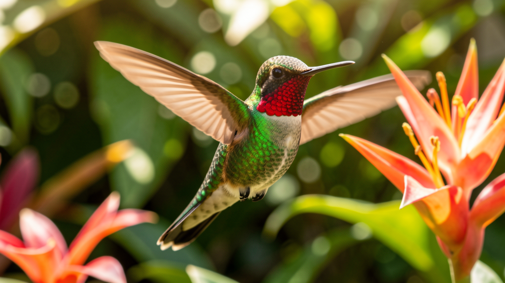

Scientific name: Trochilidae (family) · Habitat: Americas — from Alaska to Tierra del Fuego · Diet: Nectar, insects, tree sap · Fun fact: Hummingbirds can hover in mid-air by moving their wings in a figure-eight pattern at up to 80 beats per second. Their hearts can beat over 1,200 times per minute. Despite theirtiny size, they are fiercely territorial — a single flower patch can be defended by one bird all day.
Quick recall — do you remember these from Lesson 3?
glide · glyd · — "The albatross seemed to glide without moving at all."
pellucid · puh-LOO-sid · — "High above the pellucid Southern Ocean, the albatross traced great arcs."
enduring · in-DYOOR-ing · — "Sailors spoke of the albatross as an enduring symbol."
wanderlust spirit · — "The albatross is the embodiment of a wanderlust spirit."
under the weather · — "The sailor stayed below deck, under the weather."
| 🎵 Music: | The album cover used iridescent foil that caught the light differently at every angle. |
| 💼 Work: | Her CV had an iridescent quality — impressive at first glance, but the more you looked the less substance you found. |
| 🌊 Nature: | Butterfly wings are iridescent not from pigment but from microscopic scales that refract light. |
| 💼 Work: | The partner became territorial about his client list, refusing to let junior staff access the contact database. |
| 🏛️ History: | The Romans built walls not from fear, but from a deeply territorial instinct to mark and defend the limits of their world. |
| ❤️ Personal: | He was territorial about his weekend mornings — the one time a week he wasn't available for anyone. |
| 🎓 Education: | The professor was a diminutive figure in a large lecture hall — but her voice carried to every corner. |
| 🏔️ Travel: | The village consisted of a handful of diminutive cottages clustered around a single stone church. |
| 💼 Work: | The startup's diminutive team of four out-executed teams twenty times their size. |
| 🌊 Nature: | The kingfisher appeared as a flash of colour — electric blue — before it dove and resurfaced with a silver fish. |
| 🎭 Career: | Her presentation was mostly numbers and charts until the end, when she revealed the product itself as a flash of colour on screen. |
| 💬 Debate: | The leader defended her ground through three hours of cross-examination, refusing to concede on any point. |
| 💼 Work: | In the negotiation, the vendor tried to chip away at the price, but the buyer defended their ground and walked away with the original quote. |
Q1–Q3 are from Lesson 4. Q4–Q5 review Lesson 3. Click any answer — green = correct, red = wrong.
Q1 (Lesson 4). The oil on the puddle was _____ — shifting from green to gold to purple as I walked around it.
Q2 (Lesson 4). The senior engineer became _____ about which team owned the authentication service, blocking every attempt to hand it over.
Q3 (Lesson 4). The apartment was a _____ space — just thirty square metres, but she filled it with exactly what she needed.
Q4 (Review — Lesson 3). The creek was so _____ that we could see every stone on the bottom, clear as air.
Q5 (Review — Lesson 3). She had quit her apartment, left her job, and bought a one-way ticket — the _____ had taken over completely.